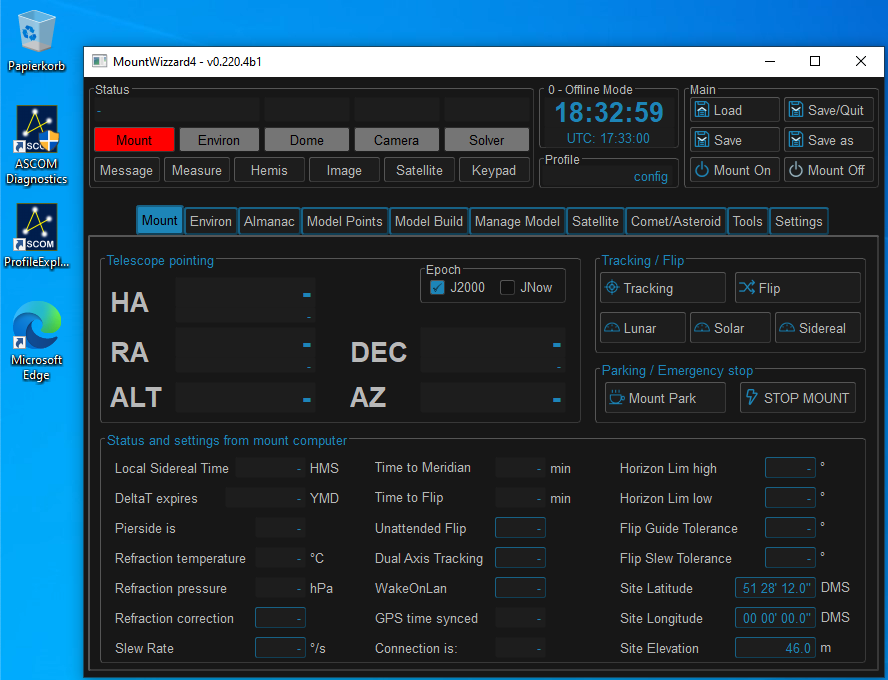
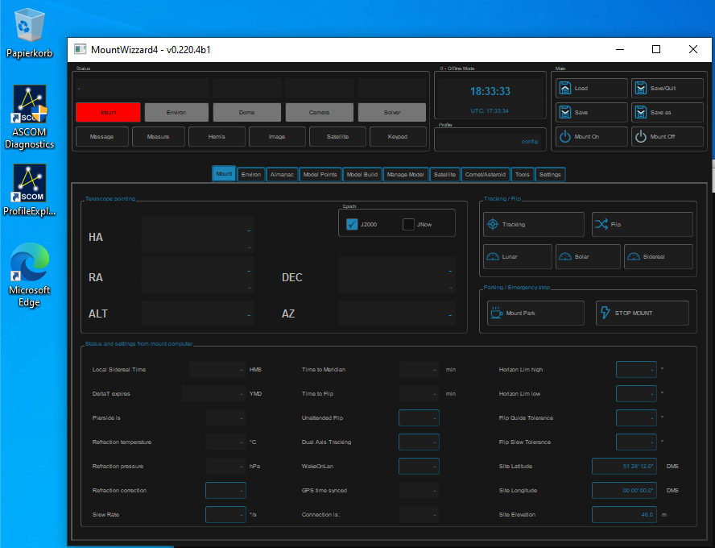
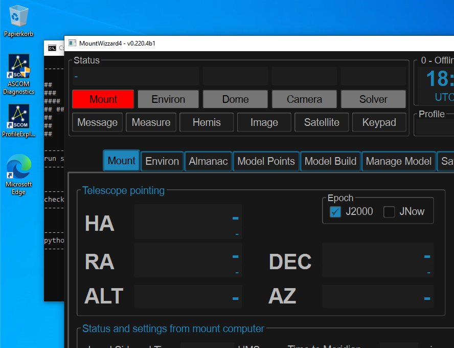

Display configuration¶
DPI scaling on Windows¶
If you are running a windows machine with setting the zoom factor for you display settings different to 100%, you might notice inadequate font sizes etc. Unfortunately this could not be worked around within MountWizzard4 itself, but you could change some environment variables to omit this problem. The actual script already contain some setting to keep the resolution to 100% even if you choose to increase this value for other applications. You want to play with these settings to make the appearance correct:
SET QT_SCALE_FACTOR=1
SET QT_FONT_DPI=96
Here some examples of the settings: Normal scaling (scale = 1, dpi = 96)
{kind=link}
Small fonts (scale = 1, dpi = 48)
{kind=link}
Bigger scale (scale = 1.5, dpi = 96)
{kind=link}
If you would like to have MountWizzard4 displayed bigger than 100%, please increase the QT_SCALE_FACTOR to the value desired. A value of 1 means 100%, so 2 means 200%. You will experience to set the font adequately.
DPI scaling on Ubuntu¶
This is quite similar to windows. You have to set the environment variables QT_SCALE_FACTOR and QT_FONT_DPI accordingly. They are already part of the MW4_Run.sh scripts.